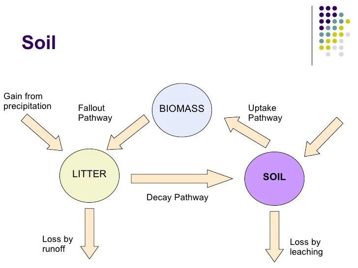

Biosphere
Biosphere is a complex web of interconnected ecosystems
Green plants
- Very important in ecosystems
- One of the producers
- Use water from soil
Primary consumers
Predators
Decomposers
- Decomposes dead bodies to release nutrients into the soil
Graph

Back to index page